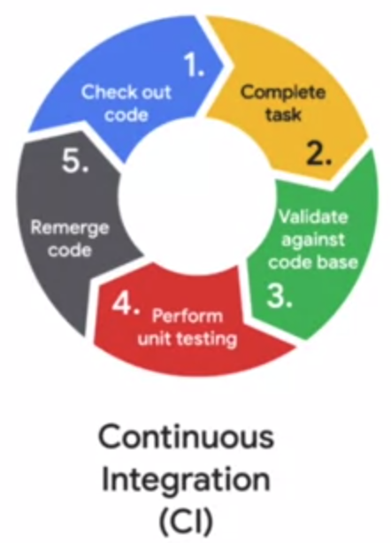
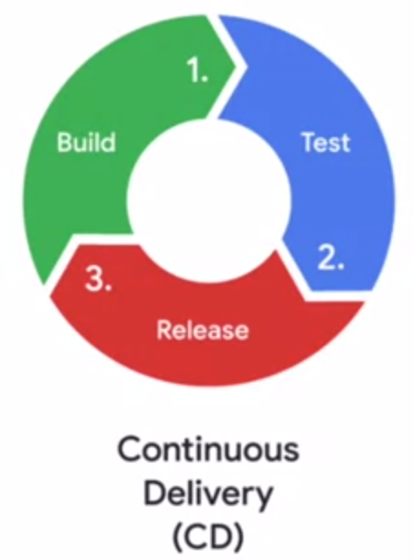

MLOps¶
What is MLOps?¶
MLOps is a lifecycle management discipline for ML
MLOps borrows several concepts from DevOps:
Continuous integration
Continuous deployment
Continuous Integration¶
Work is carried out on independent branches and merged back into the main branch once complete. This practice encourages small, frequent changes so that WIP does not go stale & developers are less likely to face tortuous merge conflicts.

Continuous Delivery¶
Completed work is released to production as soon as it has passed quality checks, rather than batching up many changes for release on an arbitrary, possibly distant, release date This reduces risk by reducing the surface area for debugging if a release has an issue, and minimising the time between developing a bug & discovering it (making it much cheaper to fix).

To these, it adds the practice of Continuous Training to manage model drift.
Differences between DevOps & MLOps¶
DevOps |
MLOps |
|---|---|
Test and validate code + components |
Test and validate code + components, data schemas, data & models |
Deploy code and monitor services |
Deploy model & monitor, retrain and reserve the model |
Organisational ML Maturity¶
Models are trained & deployed manually
Models are trained in automated pipelines, but deployment is still manual
Training, validation & deployment are all automated
Components of the MLOps lifecycle¶
Training, tuning & serving¶
Training
Tuning
Serving
Reproducible datasets
deterministic splits store data as artifacts in cloud storage
rather than selecting data points for the cross-validation splits using random sampling, we can achieve reproducibility by creating a hash from the values in each data example (which will always return the same result) and sampling values Hash a string of all the columns so that the dataset isn’t biased by values for particular columns (eg. dates in a date field) FARM_FINGERPRINT returns a signed integer. Take the absolute. Use Modulo to create equal-sized groups.
How do we stratify using this approach to ensure the splits are balanced?
Rather than extracting a fixed training & validation split, we should generate a cross-validation & test split, and then have a deterministic mechanism for selecting folds from the cross-validation split.
Tunable models
Separate hyper-parameter search from final model training
AI platform optimises its HP search based on the results from previous training runs - so don’t parallelise all runs at once!
Automate building the image with cloud build